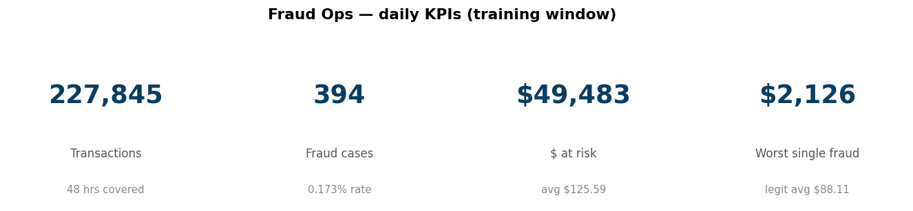
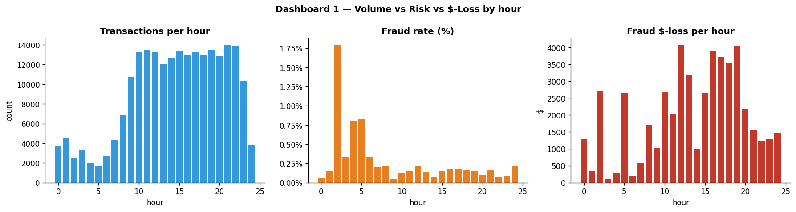
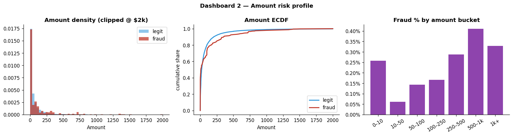
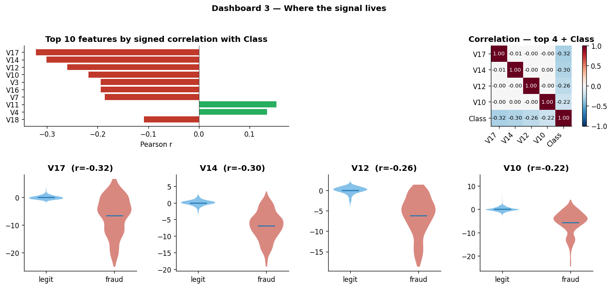
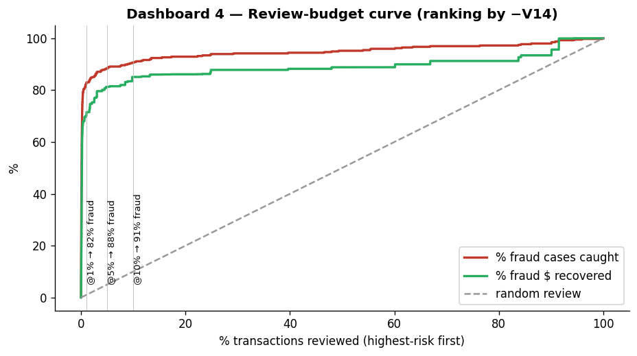
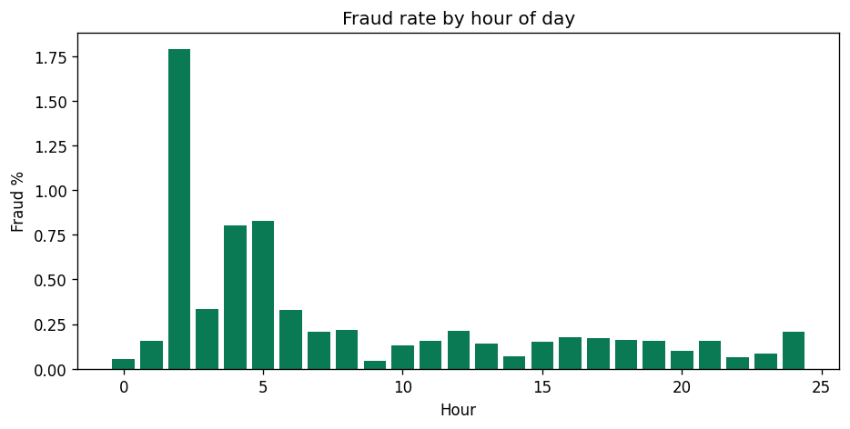
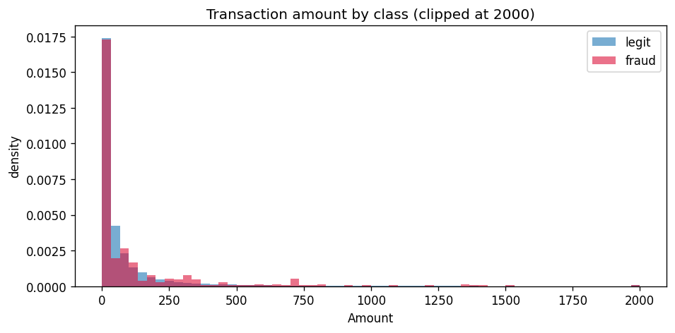

Fraud Detection Report
End-to-end pipeline analysis: from raw data ingestion to business-cost optimization.

Pipeline Architecture (Workflows)
The system was built via a strictly ordered, leakage-safe pipeline:
- 01. Ingestion: Raw CSV loaded via DuckDB, saved to Parquet. Stratified splitting ensures the 0.17% fraud rate is preserved safely before any transformations occur.
- 02. EDA: DuckDB SQL aggregations generated baseline dashboards (Time, Amount, Feature profiling) over the training partition.
- 03. Data Quality: Exact duplicate rows identified and removed to prevent model bias.
- 04. Preprocessing: A scikit-learn ColumnTransformer is fit only on the training set. It performs robust scaling on Amount and cyclical sin/cos encoding on Time. Class weights (577:1) are calculated here.
- 05. Feature Engineering: PR-AUC comparison between Linear (LogReg) and Tree (XGBoost) models proved the utility of engineered numericals (log amount) for tree-based models.
- 06. ML Prediction: XGBoost trained with class weights. Predictions passed through Isotonic Calibration. The decision threshold was tuned empirically to maximize Net Dollars, not F1/Accuracy.
- 07-09. Business Impact: SHAP values calculated for transparency; metrics translated to Executive HTML.
Exploratory Data Analysis
Understanding the fundamental behavior of fraudulent transactions in our dataset.
Risk by Hour

Risk by Amount

Feature Separability

Review Budget (Lorenz)



Diagnostics & Robustness
Validating that the XGBoost classifier behaves predictably and mathematically soundly before operationalizing.
Cost-Optimal Threshold Sweep
Default ML uses a 0.5 threshold. We swept the threshold against a real cost function: False Negatives cost the transaction amount, False Positives cost $4 in analyst time. The optimal cutoff is 0.1875.

Calibration & Model Diagnostics
Isotonic calibration ensures that a 20% model score corresponds to a literal 20% statistical probability of fraud, making expected-dollar calculations accurate.

Segment Stability
Checking PR-AUC performance across different times of day and transaction sizes to ensure the model doesn't suffer from localized blind spots.

Business Impact & Explainability
Confusion Matrices & Dollar Consequences
Statistical metrics translated to the P&L. At the optimal threshold, the model catches significant fraud value while strictly controlling analyst review overhead.

Global Feature Importance (SHAP)
Explaining the "Black Box". Features V14, V4, and V12 are the dominant drivers of fraud flags, providing operations teams with concrete reasoning for blocked transactions.